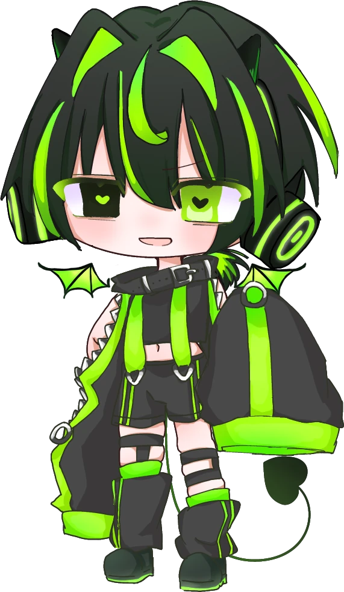

MIX Artist / Composer
ふたば
Vocal Mix / Mastering / Composition
歌ってみたのMIXから、作曲まで。
聴き終わったあとに残る、一本の物語を。
Works
Selected Works
歌ってみたのMIX
About
音の流れを、
デザインする。
HIGH28（ふたば）は、歌ってみたのMIXから作曲までを手がける
MIX師／作曲家です。
声を前に出し、音の流れが自然に繋がること。 イヤホンでもスピーカーでも、聴き終わったあとに 「一本の物語」として残る音を目指しています。
依頼MIX、イベント出演、コラボ、トラック制作の相談は Contact からどうぞ。
- Vocal Mix
- Mastering
- 歌ってみた
- 作曲
- Name
- HIGH28 / ふたば
- Role
- MIX Artist, Composer
- Based in
- Japan
- Genre
- Vocal Mix / Mastering / Composition
- Status
- Available
Group
堕天症候群
所属している歌い手グループ。個人名義のMIX・作曲とは別に、 グループとしての歌ってみたや企画に参加しています。
Group visual / 堕天症候群

Links